Modulo 2.1
Clase 1
Introducción al mundo Web
De forma general, una red de datos (o en el simple contexto RED) se puede definir como la
insfraestrutura que posibilita que varios dispositivos intercambien datos entre sí; conectados para ello a
algún
medio físico que permita la transmisión de dichos datos. Los dispositivos que forman parte de la red tambien
reciben el nombre de nodos o host. En cuanto a los medios físicos, a travéz de los cuales
viajan los datos, estos pueden ser medios guiados (cableado o inalambrico) observése la siguiente
ilustración.
Las redes
LAN, también conocidas como
WLAN(Wileress LAN), son redes
de
área local que utiliza electromagnétismo para la transmisión de datos: En los los últimos años, este tipo de
redes
locales ha alcanzado gran popularidad tanto en entornos domésticos como en empresas u organizaciones, ya que
permiten
la conexión de un equipo a una red sin apenas insfraestrutura. Además, la proliferación de dispositivos móviles
con
grandes capacidades de conectividad ha aumentado todavía más la demanda de este tipo de redes. Al igual que
ocurre
con ethernet en las redes locales cableadas, existe un estándar que domina la implantación de redes locales
inalámbricas y que se conoce como
WiFi.
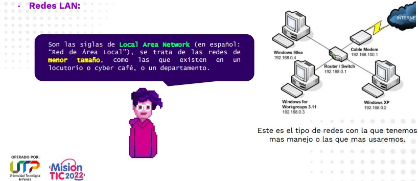
Son las siglas de
Metropolitan Area Network (en español:
“Red de Área
Metropolitana”)
esta red se encarga de designar redes de
tamaño intermedio, como las empleadas en los campus
universitarios o en grandes bibliotecas o empresas, que conectan distintas áreas alejadas entre sí.
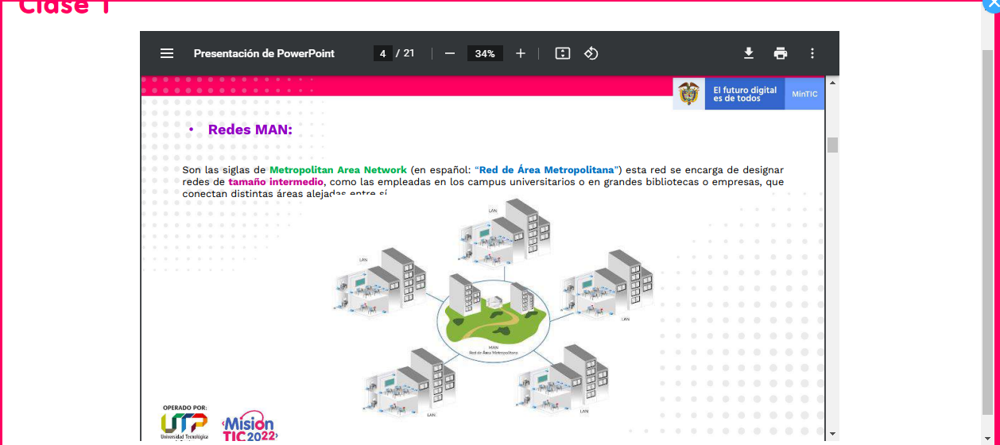
Estas redes se extienden por grandes áreas geográficas y conectan redes más pequeñas como redes LAN (Local Area
Networks) o MAN (Metropolitan Area Networks). Por esto, solo se utilizan en el sector profesional.
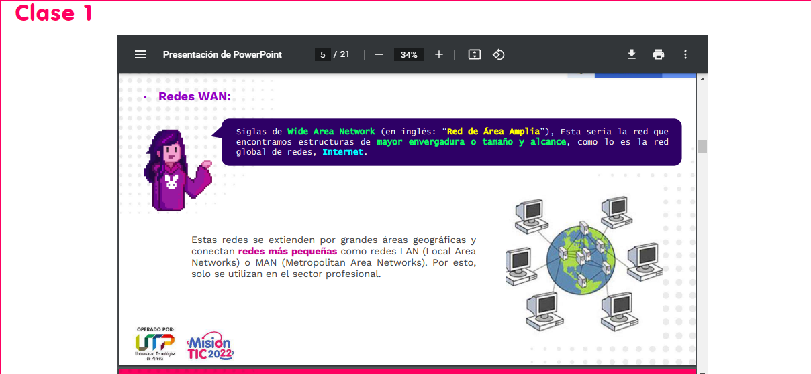
- Internet es una red de computadoras interconectadas a nivel mundial en forma de tela de araña. Consiste de
servidores (o "nodos") que proveen información a aproximadamente 100 millones de personas que están
conectadas
entre ellas a través de las redes de telefonía y/o cable.
- Algunas características de Internet:
- La información está disponible las 24 horas del día en cualquier sitio del mundo Aunque su uso
inicial fue para fines educativos
- hoy en día se usa para cualquier propósito - negocios, entretenimiento, educación, etc.
- Internet no pertenece a nadie y no existe una "primera página"
- Cualquier persona puede poner información en Internet
- (Casi) no existen regulaciones para limitar el uso de Internet
- Internet brinda oportunidades novedosas y económicas para comunicarse
- Internet debe ser vista bajo los siguientes lentes
- Como una red (la madre de todas las redes públicas y privadas)
- Un medio (TV, radio, etc)
- Un mercado
- Una plataforma para transacciones(~$600 billones en el 2000)
- Una plataforma para desarrollo de aplicaciones
- ¿y qué es Internet 2? Es la nueva versión de Internet que permite la transmisión de datos a alta
velocidad,
mayor seguridad y mayor confiabilidad. Internet 2 permitirá:
- Enseñanza a distancia
- Investigación científica sin fronteras
- Telemedicina
- Explotar a otros niveles de interacción la musica y las artes
- Trabajo colaborativo en tiempo real
- Realidad virtual
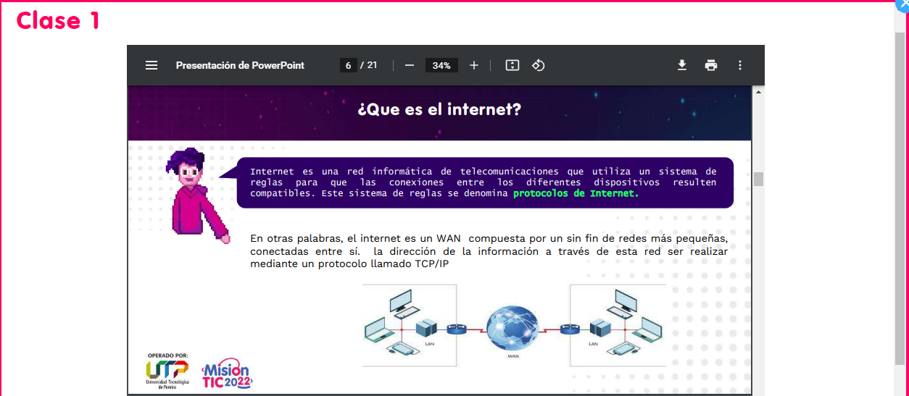
Los protocolos
Los
protocolos de red son un conjunto de reglas que rigen la comunicación entre dispositivos
que
están conectados a una red. Estas reglas se constituyen de instrucciones que permiten a los dispositivos
identificarse
y conectarse entre sí, además de aplicar reglas de formateo, para que los mensajes viajen de la forma adecuada
de
principio a fin. Dichas reglas de formateo determinan si los datos son recibidos correctamente o si son
rechazados
o ha habido algún tipo de problema en la transferencia de la información.
Existen dos protocolos importantes que vamos a revisar:
El protocolo DHCP permite configurar automáticamente los sistemas host de una red TCP/IP durante el inicio
de los
sistemas. DHCP utiliza un mecanismo de cliente-servidor. Los servidores almacenan y gestionan la información
de
configuración de los clientes y la suministran cuando éstos la solicitan. Esta información incluye la
dirección
IP del cliente y los servicios de red de los que el cliente puede disponer.
DHCP ha evolucionado de un protocolo anterior, BOOTP, que se diseñó para el inicio en una red TCP/IP. DHCP
utiliza
el mismo formato que BOOTP para los mensajes entre el cliente y el servidor. No obstante, a diferencia de
los
mensajes BOOTP, los mensajes DHCP pueden incluir datos de configuración de red para el cliente.
Una de las ventajas de DHCP es la posibilidad de gestionar la asignación de direcciones IP mediante
permisos. Los
permisos permiten reclamar las direcciones IP cuando no están en uso. Las direcciones IP reclamadas se
pueden
reasignar a otros clientes. Un sitio que utilice DHCP puede utilizar una agrupación de direcciones IP menor
que la
que se necesitaría si todos los clientes tuvieran asignada una dirección IP permanente.

También permite asignar otros parámetros de configuración de red a cada dispositivo en una red para que puedan
comunicarse con otras redes
IP. Este servidor posee una lista de direcciones
IP
dinámicas y las va asignando a los clientes conforme estas van quedando libres, sabiendo en todo momento quién
ha
estado en
posesión de esa
IP, cuánto tiempo la ha tenido y a quién se la ha asignado después. Así
los clientes de una red IP pueden conseguir sus parámetros de configuración automáticamente.
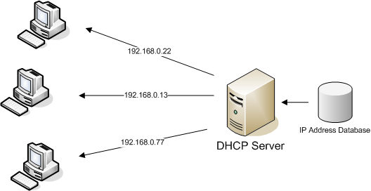
IP significa
“Internet Protocol", o lo que es lo mismo,
“Protocolo de Internet". Se trata como dice el nombre de un protocolo de comunicaciones a través de la
red.
Por otro lado tenemos la dirección
IP, que es el número que se asigna dentro de la red
y que es la manera que tiene Internet de saber quién es quién. Se tratan por lo tanto una especie de "matrícula"
para identificarte cuando estás conectado. Sin embargo
hay dos tipos de direcciones IP
,
las IP Públicas y las IP Privadas, y cada una de ellas tiene una finalidad totalmente diferente.
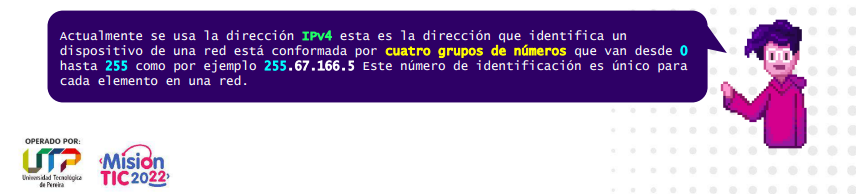
Para tener una idea, la IPv4 puede direccionar 4200 millones
de
dispositivos lo cual es bastante poco teniendo en cuenta el tamaño de la red de internet, la IPv6
puede direccionar 340 sextillones de dispositivos lo cual le permite asignar 670
mil
billones de
direcciones por cada milímetro cuadrado de la superficie de la Tierra, haciendo totalmente imposible quedarnos
sin
dirección
IPv6.
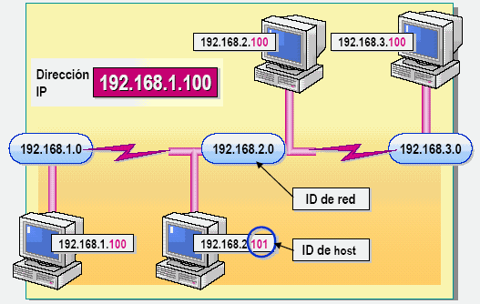
Clasificación de las IP
las direcciones no alcanzarían para todos los dispositivos, fue necesario crear un método para subsanar ese
inconveniente,
una medida para
clasificar las
IP y así realizar una mejor
administración.
Una dirección IP es una etiqueta numérica que identifica, de manera lógica y jerárquica, a un interfaz
(elemento de comunicación/conexión) de un dispositivo (habitualmente un ordenador) dentro de una red que
utilice
el protocolo IP (Internet Protocol), que corresponde al nivel de red del protocolo TCP/IP. Dicho número no
se ha
de confundir con la dirección MAC que es un identificador de 48bits para identificar de forma única a la
tarjeta
de red y no depende del protocolo de conexión utilizado ni de la red. La dirección IP puede cambiar muy a
menudo
por cambios en la red o porque el dispositivo encargado dentro de la red de asignar las direcciones IP,
decida
asignar otra IP (por ejemplo, con el protocolo DHCP), a esta forma de asignación de dirección IP se denomina
dirección IP dinámica (normalmente abreviado como IP dinámica).
- Clase A: 10.0.0.0 a 10.255.255.255 (8 bits red, 24 bits hosts)
- Clase B: 172.16.0.0 a 172.31.255.255 (16 bits red, 16 bits hosts)
- Clase C: 192.168.0.0 a 192.168.255.255 (24 bits red, 8 bits hosts)
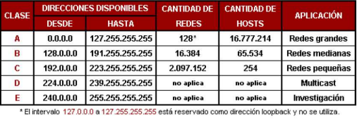
Generalmente, hay varios elementos de la red doméstica en los que el uso de IPv4 o IPv6 es
relevante:
Los computadores, tabletas, teléfonos inteligentes, dispositivos multimedia y cualquier otro aparato que se
conecte a Internet.
Desde el año 2001, aproximadamente, la mayoría de los sistemas operativos (por ejemplo a partir de Windows
XP),
tienen soporte de IPv6. Exactamente igual con Mac OS X, Linux, BSD, etc. Esto es cierto tanto para sistemas
operativos
clientes como servidor. La diferencia fundamental es que inicialmente IPv6 no estaba activado por defecto
(caso de XP y 2003), mientras que en las siguientes versiones si lo está (Windows Vista , 7, Mac OS X, mayoría
de
Linux y
similares), aunque es fácil hacerlo. Aquellos dispositivos que no tienen IPv6, frecuentemente pueden ser
actualizados y
lo más probable es que en pocos meses, los fabricantes de los mismos dispongan de nuevas versiones de software
que
incluso
en ocasiones pueden llegar a descargarse automáticamente.
Una red de computadoras consta tanto de hardware como de software. En el hardware se incluyen: estaciones de
trabajo, servidores, tarjeta de interfaz de red, cableado y equipo de conectividad. En el software se
encuentra el
sistema operativo de red (Network Operating System, NOS).
Estaciones de trabajo
Cada computadora conectada a la red conserva la capacidad de funcionar de manera independiente, realizando sus
propios procesos. Asimismo, las computadoras se convierten en estaciones de trabajo en red, con acceso a la
información
y recursos contenidos en el servidor de archivos de la misma. Una estación de trabajo no comparte sus propios
recursos
con otras computadoras. Esta puede ser desde una PC XT hasta una Pentium, equipada según las necesidades del
usuario;
o también de otra arquitectura diferente como Macintosh.
Servidores
Son aquellas computadoras capaces de compartir sus recursos con otras. Los recursos compartidos pueden incluir
impresoras, unidades de disco, CD-ROM, directorios en disco duro e incluso archivos individuales. Los tipos de
servidores
obtienen el nombre dependiendo del recurso que comparten. Algunos de ellos son: servidor de discos, servidor
de
archivos,
servidor de archivos distribuido, servidores de archivos dedicados y no dedicados, servidor de terminales,
servidor de impresoras, servidor de discos compactos, servidor web y servidor de correo.
Tarjetas de interfaz de red
Para comunicarse con el resto de la red, cada computadora debe tener instalada una tarjeta de interfaz de red
(Network Interface Card, NIC). Se les llama también adaptadores de red o sólo tarjetas de red. En la mayoría
de
los casos,
la tarjeta se adapta en la ranura de expansión de la computadora, aunque algunas son unidades externas que se
conectan
a ésta a través de un puerto serial o paralelo. Las tarjetas internas casi siempre se utilizan para las PC's,
PS/2 y estaciones de trabajo como las SUN's. Las tarjetas de interfaz también pueden utilizarse en
minicomputadoras y mainframes.
A menudo se usan cajas externas para Mac's y para algunas computadoras portátiles. La tarjeta de interfaz
obtiene
la información
de la PC, la convierte al formato adecuado y la envía a través del cable a otra tarjeta de interfaz de la red
local.
Esta tarjeta recibe la información, la traduce para que la PC pueda entender y la envía a la PC.
El término host o anfitrión se usa en informática para referirse a las computadoras u otros
dispositivos (tabletas, móviles, portátiles)
conectados a una red que proveen y utilizan servicios de ella. pero en esta guía solamente tendremos en cuenta
dos
elementos los servidores y los host.
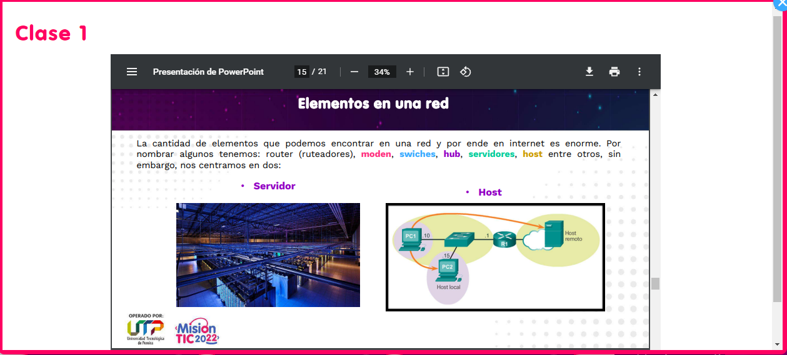
Servidores
Un servidor hace referencia a un proveedor de servicio, pueden ser uno o varios dispositivos como computadores
generalmente de gran potencia, dedicadas a brindar un servicio. Sin embargo un servidor también puede tratarse
de un software que nos brinde un servicio como por ejemplo un servidor Proxy el cual puede ser un servidor
físico o un software que se ejecuta dentro un computador.
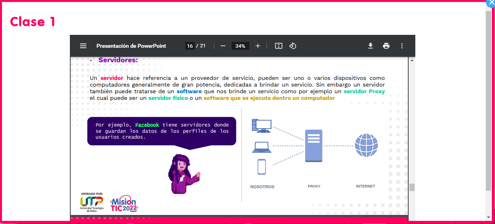
Host
Se traduce como anfitrión, son los elementos que componen una red, y hacen uso de está, tales como computadores,
teléfonos, o consolas de video juegos. Cualquier componente que se conecte a una red es un host, incluso un
servidor
puede ser un host.
En los sistemas operativos, el término «terminal anfitrión» denota típicamente un ordenador o software que
proporciona servicios
a múltiples terminales de ordenador o un ordenador que sirve a dispositivos más pequeños o menos capaces,
tales como un ordenador
central que sirve terminales de teletipo o terminales de vídeo. Otros ejemplos son un host telnet (servidor
telnet) y un xhost
(cliente X Window).
Modelo cliente servidor
El modelo cliente servidor es un método de diseño de software
en
el cual se divide las tareas entre dos partes. Consiste en un cliente que no es que un software que se ejecuta
en un
host y este se conecta a través de una red a un servidor y realizar una petición, el
servidor
procesa esta petición y brinda una respuesta al cliente.
En el
modelo
cliente-servidor,
el dispositivo que solicita información se denomina “cliente”, y el dispositivo que responde a la solicitud
se
denomina “servidor”. Los procesos de cliente y servidor se consideran parte de la capa de aplicación.
El cliente comienza el intercambio solicitando los datos al servidor, quien responde enviando uno o más
streams de
datos al cliente. Los protocolos de la capa de aplicación describen el formato de las solicitudes y
respuestas entre
clientes y servidores. Además de la transferencia real de datos, este intercambio también puede requerir la
autenticación
del usuario y la identificación de un archivo de datos que se vaya a transferir.
Un ejemplo de una red cliente-servidor es el uso del servicio de correo electrónico de un ISP para enviar,
recibir
y almacenar correo electrónico. El cliente de correo electrónico en una PC doméstica emite una solicitud al
servidor de correo
electrónico del ISP para que se le envíe todo correo no leído. El servidor responde enviando al cliente el
correo electrónico
solicitado.
Aunque los datos se describen generalmente como el flujo del servidor al cliente, algunos datos fluyen
siempre del
cliente al servidor. El flujo de datos puede ser el mismo en ambas direcciones, o inclusive puede ser mayor
en la dirección
que va del cliente al servidor. Por ejemplo, un cliente puede transferir un archivo al servidor con fines de
almacenamiento.
Como se muestra en la ilustración, la transferencia de datos de un cliente a un servidor se conoce como
“subida” y la transferencia
de datos de un servidor a un cliente se conoce como “descarga”.
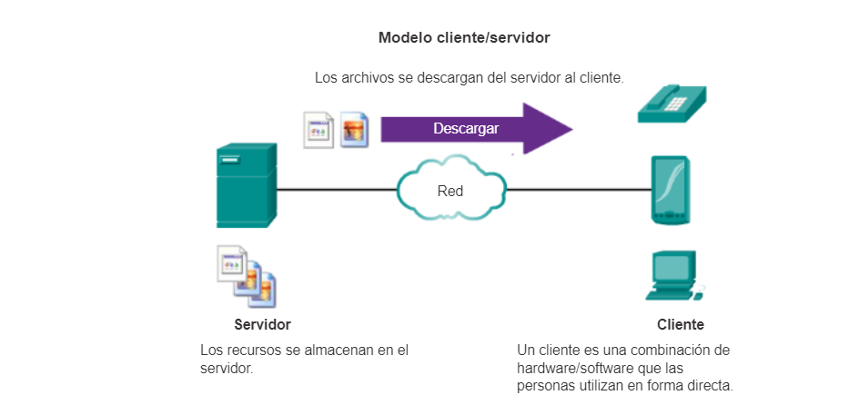
Internet y la World Wide Web (WWW) o red informática mundial
logo www; La World Wide Web o "Red Informática Mundial", conocida también como la WWW, es
el
principal servicio de Internet. Consiste en la distribución de la información a través de "hipertexto". El
usuario
necesita un programa llamado "navegador web". Con el navegador web el usuario puede visualizar los sitios
web,
compuestos de páginas web. La WWW es el servicio más usado de Internet, de hecho ahora mismo, para
visualizar esta
página que estás viendo, estas usando la WWW.
Tenemos aquí una serie de conceptos que vamos a describir:
Página Web: La página web es la base de la WWW. De hecho la WWW está diseñada para
visualizar
páginas web. Una página web muestra una información que puede ser vista por cualquier usuario de Internet.
Las páginas
web pueden contener además de texto, imágenes, contenido multimedia (video, audio, etc) y enlaces a otras
páginas.
Sitio web: Un sitio web consiste en una serie de páginas web conectadas entre sí. Las
páginas de
un mismo sitio son publicadas en Internet conjuntamente y por la misma entidad (empresa, organización o
persona). Normalmente
un sitio web tiene una página principal, desde la que se accede, por medio de enlaces a las demás páginas
del sitio.
Navegador web: Un navegador web es una aplicación o programa informático que nos permite
visualizar
las páginas web. Estos programas son todos gratuitos, pueden descargarse desde Internet, además cualquier
sistema operativo
(Windows, Linux, Mac) Al ser instalado en nuestro ordenador lleva al menos un navegador web. Para saber más
sobre los navegadores,
puedes ver en la sección Programas y aplicaciones la página Navegadores.
Hipertexto: Es un tipo de lenguaje especial (lenguaje de programación)) en el que se
escriben las páginas web.
Llamado tambien HTML. En una página web no sólo hay texto, hay imágenes, enlaces, otros contenidos. Además
al escribir una página
debemos también indicar otros aspectos, como colores, tamaño de texto, posición en la página, etc. Todo esto
debe indicarse en el
hipertexto.
Funcionamiento de la web
El usuario escribe en el navegador (barra de navegación) el nombre de la página o sitio que quiere visualizar.
se
envia una petición al servidor Web solicitando la página. En el caso típico de una página web, primero se
envia el texto y después
se envían otros archivos adicionales como pueden ser imágenes, gráficos y otros ficheros.
Vemos aquí otro concepto, el de "servidor web". El servidor web es el ordenador que contiene y distribuye la
página
web al resto de ordenadores que se lo piden.